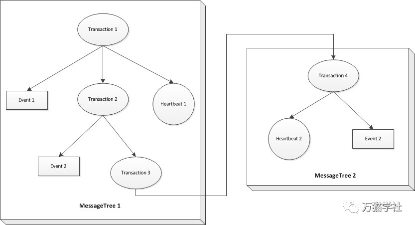

为了理解RootMessageId先简单介绍一下CAT的数据结构设计。CAT客户端会将所有消息都封装为一个完整的消息树（MessageTree），消息树可能包括Transaction、Event、Heartbeat、Metric等类型的消息。具体如下：
欢迎关注微信公众号：万猫学社，每周一分享Java技术干货。
其中，Transaction类型的消息可作为消息树节点，而其他消息只可作为消息树的叶子节点，也就是Transaction是一个可嵌套的递归结构。比如：

消息树的每一节点都有一个属性messageId，用来唯一表示节点本身，其构成为：{domain}-{ip}-{timestamp}-{自增index}。另外还有两个属性，分别是parentMessageId, rootMessageId。parentMessageId表示父节点的messageId；rootMessageId则表示整个消息树的根节点的messageId。这两个属性在之后CAT的调用链分析与分布式调用链分析中发挥了关键作用。
欢迎关注微信公众号：万猫学社，每周一分享Java技术干货。
根据RootMessageId可以追踪某一个请求的整个分布式调用链，结合每一条日志快速定位耗费性能的症结，做针对性的性能优化。更加方便地做性能优化，特别是TP95、TP99等指标。
遇到偶尔发生的bug，是最让人头疼的，只有先从日志中找线索，但是在海量的日志中找到出现bug的那一个请求是很困难的。有了上游API提供的RootMessageId，就可以快速过滤出那次请求的所有日志， 更快速更方便地定位线上bug。
欢迎关注微信公众号：万猫学社，每周一分享Java技术干货。
当然是每一句日志上都记录RootMessageId了。有的同学会说，这日志也记录的太多了。当发现线上问题无法定位时，你就会狠日志太少了。其实记录日志不怕多，就怕不全。现在硬盘很便宜了，搞个几T没有问题，另外还可以设置日志清理策略。
欢迎关注微信公众号：万猫学社，每周一分享Java技术干货。
前面说了那么多，终于到了今天的压轴大戏了。实现记录到日志有很多种方式，这里使用的是MDC（Mapped Diagnostic Contexts）。顾名思义，其目的是为了便于我们诊断线上问题而出现的方法工具类，目前我们经常使用的logback和log4j都是支持的。
欢迎关注微信公众号：万猫学社，每周一分享Java技术干货。
只需要在每个请求的入口调用MDC.put方法，把rootMessageId赋值进去就可以了，是不是很简单？示例代码：
//在Filter里，从header里获取上下文信息，包括messageId、parentMessageId、rootMessageId
CatContext catContext = new CatContext();
catContext.addProperty(Cat.Context.ROOT, request.getHeader(CatConstants.CAT_HTTP_HEADER_ROOT_MESSAGE_ID));
catContext.addProperty(Cat.Context.PARENT, request.getHeader(CatConstants.CAT_HTTP_HEADER_PARENT_MESSAGE_ID));
catContext.addProperty(Cat.Context.CHILD, request.getHeader(CatConstants.CAT_HTTP_HEADER_CHILD_MESSAGE_ID));
if (catContext.getProperty(Cat.Context.ROOT) == null) {
//如果调用链的顶端，没有上下文信息，需要生成上下文信息
Cat.logRemoteCallClient(catContext);
} else {
Cat.logRemoteCallServer(catContext);
}
MDC.put("traceId", catContext.getProperty(Cat.Context.ROOT));如果你还不知道怎么集成CAT调用链，可以看看之前的《SpringBoot集成CAT调用链实例》
然后，在设置日志输出格式的配置文件里增加[%X{traceId}]。
Logback的xml配置示例：
<?xml version="1.0" encoding="UTF-8" ?>
<configuration scan="true">
<appender name="CONSOLE" class="ch.qos.logback.core.ConsoleAppender">
<layout class="ch.qos.logback.classic.PatternLayout">
<pattern>[%d{yyyy-MM-dd HH:mm:ss.SSS}] [%thread] [%X{traceId}] [%-5level] [%-40.36logger{40}:%-4.4line] - %msg%n</pattern>
</layout>
</appender>
<root level="INFO">
<appender-ref ref="CONSOLE" />
</root>
</configuration>log4j的properties配置示例：
log4j.rootCategory=INFO,stdout,info,error
log4j.rootLooger=warn,stdout,info,error
log4j.appender.stdout=org.apache.log4j.ConsoleAppender
log4j.appender.stdout.layout=org.apache.log4j.PatternLayout
log4j.appender.stdout.layout.ConversionPattern=%d{yyyy-MM-dd HH:mm:ss,SSS} [%-5p] [%thread] [%X{traceId}] method:%l - %m%n欢迎关注微信公众号：万猫学社，每周一分享Java技术干货。